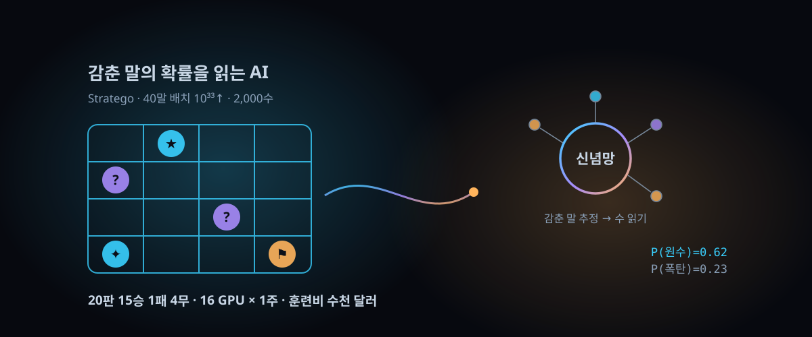

훈련비 450만 달러→수천 달러, 20판 15승 — 바둑·체스가 못 넘은 '숨긴 정보' 장벽을 대학 4곳이 깬 방법

결론부터. 이긴 사람이 문제의 주인공인 시대가 저물었다. 상대가 무엇을 숨겼는지 '확률로 추정하는 두 번째 두뇌'를 붙이자, 산업계가 수백만 달러를 퍼붓고도 못 넘은 게임이 대학 연구실 예산으로 무너졌다.
카네기멜론·MIT·뉴욕대·스탠퍼드 4개 대학 연합이 만든 전략보드 AI '아타락소스(Ataraxos)'가 10월 1일(현지) 발표된 논문에 실렸다. 상대는 역사상 가장 많은 타이틀을 가진 현역 선수 핌 니메이하어 — 20판에서 15승 1패 4무였다. 훈련비는 수천 달러 수준, GPU 16장으로 일주일이다.
해커뉴스에도 10월 2일 관련 소식이 올라 표 209개를 쌓았다. "체스는 1997년, 바둑은 2016년에 끝났는데 왜 이건 2026년까지 남았나" — 이 글은 그 질문의 답을 분해한다.
30초 요약
| 항목 | 내용 |
|---|---|
| 무슨 사건 | 숨긴 정보가 거대한 보드게임 '전략보드(Stratego)'에서 AI가 처음으로 인간 최고수를 압도적으로 이겼다. 상대는 세계선수권 4회·1위 유지 600주 이상 기록의 현역 선수 |
| 전적 | 정식 시리즈 20판 15승 1패 4무. 3주에 걸쳐 온라인으로 진행됐고, 선수는 AI가 자기에게 적응하지 않는다는 조건으로 판마다 수천 달러 승자상금(승리 1판당 100달러)을 걸고 약점 찾기를 시도했다 |
| 핵심 기술 | ① 자기대련 강화학습의 조정 강도를 정책 실력에 따라 동적으로 조절 ② 상대의 감춘 말을 추정하는 '신념 네트워크' ③ 그 추정 위에 수 읽기(테스트 타임 서치)를 최초로 성공 |
| 비용·효율 | GPU 16장×1주 + 신념 모델용 4장×4일, 훈련비 수천 달러. 선행 연구 딥내시의 1/30 이하 자기대련 판수로 더 강한 정책 도달 (논문 저자 발언 기준) |
| 확장성 | 같은 설계로 배리지언 전략보드에서 다관왕 3명 격파, 협동 카드게임 하나비 신기록, 중국 카드게임 두디주 최강 봇 격파 |
| 주의 | 성과는 게임·시뮬레이터가 있는 영역 한정. 현재 모델은 자기 수를 설명하지 못한다 — 협상·금융 같은 실전 이식엔 해석 가능성이 남은 과제 |
1. 무엇이 터졌나
게임 규칙부터. 전략보드는 말 40개로 진영을 짜서 시작한다. 계급은 원수에서 스파이까지, 폭탄과 사령부가 섞인다. 상대는 내 말의 '위치'만 알고 '정체'는 모른다. 부딪혀야만 정체가 드러나고, 진한 쪽이 사라진다. 목표는 상대 사령부 점령. 체스·바둑처럼 모든 게 다 보이는 게임이 아니라, 포커처럼 상대가 뭘 감췄는지가 게임의 절반인 '불완전 정보' 종목이다.
포커와도 차원이 다르다. 포커의 숨은 정보는 카드 두 장, 조합 1,326개뿐이라 기계가 전부 헤아릴 수 있다. 전략보드는 배치 경우의 수가 10의 33제곱을 넘고(논문 기준), 한 판이 체스 40수와 달리 2,000수까지 늘어진다. 여기에 '약한 말을 원수처럼 굴러 위협하는' 블러프의 균형까지 겹친다.
산업계는 이미 시도한 적이 있다. 2022년 구글 딥마인드가 '딥내시'로 전문가 수준에는 도달했지만, 세계 최상위 선수들을 안정적으로 이기는 데는 실패했다. 이번 논문 저자들이 그 지점을 정확히 찔렀다. 인간 최고수 니메이하어를 상대로 역사상 처음 있는 '인간을 넘어선' 성적을, 대학 예산으로 냈다는 것이다.
2. 왜 대단한가
① '감추기'를 정면으로 포기하고, 맞추는 두 번째 두뇌를 달았다
포커 계열 AI의 정석은 가능한 상대 패를 모두 나열해 계산하는 공개정보 변환이다. 정보량이 커지면 비용이 정보량에 비례해 폭발하므로 전략보드엔 적용 자체가 불가능하다. 아타락소스의 접근은 반대로 '전체 나열'을 버렸다. 상대가 둔 수의 기록만 보고 감춘 말의 정체를 추정하는 트랜스포머 기반 '신념 네트워크'를 따로 훈련했다. 실제 수에서는 모든 가능성을 따지는 대신, 이 네트워크가 뽑아준 그럴듯한 배치 몇 개에만 후보 수를 시뮬레이션하고 평균 내서 수를 고른다.
② 수 읽기가 처음으로 가능해졌다 — 딥내시가 포기한 그 자리
알파고 이후 '강화학습으로 기세를 잡고, 두기 직전 수 읽기로 다듬는다'는 조합은 승리의 공식이 됐다. 그런데 정보 숨김이 큰 게임에서는 수 읽기가 사실상 포기된 상태였다. 탐색 공간이 너무 커서 손댈 수 조차 없던 영역이다. 논문은 이 공백을 메운 첫 사례다. 수 읽기의 실체는 의외로 단순한데, 자기대련 학습 업데이트를 한 번 더하는 것과 같은 원리(테스트 타임 업데이트)를 쓴다. 신념 네트워크가 만들어 준 가상 판 위에서 자기 정책으로 롤아웃하고, 나온 값으로 현재 수만 조용히 보정한다.
③ 학습이 제자리회전을 하지 않게, '감량의 크기'를 정책 성숙도에 맞췄다
숨긴 정보 환경의 자기대련은 제자리회전·발산하기 일쑤다. 팀의 처방은 조절 강도의 동적 배분이다. 정책이 약할 때는 강한 규제와 큰 업데이트로 빠르게 기세를 끌어올리고, 정책이 강해지면 규제를 풀고 업데이트 폭을 좁혀 미세 조정으로 기력을 아낀다. 이 설계 하나로 딥내시가 소화한 자기대련 판수의 1/30도 안 되는 1억 6,300만 판(논문 기준)에 더 강한 정책에 도달했다.
④ 값이 3자리 숫자가 아니라 4자리 이하로 떨어졌다
비교표가 이 논문의 진짜 충격이다. 딥내시는 구글 전용 칩 1,024개로 두세 달 돌렸고, 아타락소스 팀은 그 비용을 2025년 시세로 300만~450만 달러로 추정한다. 아타락소스는 16 GPU에 일주일, 신념 모델까지 더해도 수천 달러다. 저자는 "학계 규모에서는 GPU 목장을 쓸 수 없다"며 초당 수백만 수를 굴리는 자체 시뮬레이터를 직접 짜서 이 비용을 만들었다고 설명한다. 산업 연구와 대학 연구실 사이 가격벽이 3자리 숫자 이상 무너진 사건이다.
3. 바로 써먹기
보드게임을 안 해도 이 연구가 건드려야 할 곳이 있는 이유 — '남이 뭘 감췄는지도 모른 채 결정해야 하는 문제' 목록이다. 협상(상대 마지노선), 금융(호가의 배경 사정), 군사 시뮬레이션(적 위치)이 전부 같은 수학적 생김새다. 논문이 제시하는 설계 패턴을 실무 관점으로 옮기면:
| 설계 요소 | 아타락소스의 구현 | 실무 이식 시 질문 |
|---|---|---|
| 정책–가치 네트워크 | 배치망(말 배치)과 수망(이동) 두 개를 상호 결합된 자기대련으로 학습 | 우리 문제의 '초기 배치'와 '행동'은 무엇에 해당하는가 |
| 신념 네트워크 | 관측된 수의 궤적만 입력으로 감춘 말의 종류를 행 우선 복호화; 드롭아웃으로 분포 외 상대에 대비 | 상대 행동 로그만으로 후분포를 만들 수 있는가 — 없으면 이 기법은 출발 불가 |
| 테스트 타임 서치 | 두기 직전 롤아웃 평균값으로 테이블형 업데이트 한 번 (학습 시 업데이트보다 과감히) | 1차당 예산(시간·연산)을 어디까지 허용할 것인가 |
| 동적 감량 | 정책 강도에 비례해 규제·갱신 크기를 반비례로 조정 | 안정성과 속도의 무릎 지점을 조기 검증으로 찾기 |
연구진이 같은 패턴으로 배리지언 전략보드·하나비·두디주에서 전부 1등을 찍었다는 점은, 이 네 줄이 게임 전용 트릭이 아니라 재사용 가능한 주형임을 뒷받침한다. 다만 전제 조건은 선명하다: '빠르고 정확한 시뮬레이터' (논문 표현)가 있어야 한다. 실시간 시뮬레이터가 없는 시장·협상은 데이터 수집 자체가 과제가 된다.
4. 해외 반응 쟁점
① "비용 곡선이 본론" — 해커뉴스와 관련 논의에서 가장 두텁게 공감한 대목은 15-1-4 자체가 아니라 '1,024 칩 vs 16 GPU'다. 산업계가 수백만 달러로 실패한 곳을 대학 4곳이 몇 천 달러로 통과한 건, 방법론이 산업 전용에서 학술 공용으로 이주했다는 뜻이기 때문이다.
② "블러프를 확률로 산다" — 연구진은 봇이 승률 2% 지점에서 태연하게 블러프로 판을 되돌리는 장면을 관측했다고 말했다. 사람이면 멘탈이 나간 상황인데, 기계는 '비밀을 알고 있다'는 사실 자체를 무시하고 결정할 수 있다는 설명이다(MIT 저자 발언). 약점을 드러내지 않기 위해 일부러 방치하는 수도 두는데, 양쪽 판을 다 보는 눈엔 재앙처럼 보이는 자리다.
③ "메타가 흔들렸다" — 2025년 세계선수권에서 대회 참가자 40판 중 38판을 AI가 이겼다. 저자들은 "이 봇이 메타게임을 좀 비틀었다"고 표현한다. 참가 선수들이 의외라고 느낀 포석은 '사령부를 구석에 두고 폭탄 두 개만 얹는' 드문 배치였고, 이는 봇이 자기대련에서 학습한 배치였다. 인간 공동체가 최강자를 분석해 메타를 재구성하는 회전이 이번엔 AI 쪽에서 먼저 나왔다는 얘기다.
④ "그래서 인간이 뭘 남기나" — 일부 반응은 '완벽한 전략도 운에서 진다'는 저자 발언(니메이하어의 유일한 1승 포함)에 기대어 불확실성을 승부의 일부로 옹호한다. 반대편은 20판 표본의 통계적 한계를 지적한다. 심사 과정에서 'i.i.d. 가정 하의 p값'까지 명시된 건 이런 감시 자체도 학술 과정의 일부였다는 방증이다.
5. 마시기 전 주의
- '수천 달러 훈련'은 이 게임 전용 값이다. 도메인마다 시뮬레이터 작성·정보 구조 설계 비용이 달라지므로, 이 숫자를 붙여 "이제 LLM 에이전트도 몇 천 달러"로 읽으면 오독이다.
- 니메이하어의 1패는 AI가 아니라 배치가 만든 운의 산물이다. 전략보드 잘하기의 정의에 무작위 배치가 포함돼 있어 "완벽한 전략도 진다"고 저자들이 선을 긋는다. 15-1-4를 무결점 성적처럼 인용하지 말 것.
- 20판은 표본이 작다. 논문은 승자 정의와 p값을 명시했지만, 상대 1명·한 시점의 시리즈다. "어떤 인간도 못 이긴다"는 현재 시점의 실증이지 증명이 아니다.
- 현재 아타락소스는 자기가 왜 그 수를 뒀는지 설명하지 못한다. 저자들이 해석 가능성을 다음 과제로 공개적으로 공언한 상태 — 규제·감사 요구가 있는 실무 이식의 관문이다.
- 실전 분야는 시뮬레이터가 아니라 사람이 상대다. 워게임을 "강한 상대가 내 수에 어떻게 반응할지 미리 굴려보는 도구"로 쓰자는 제안(논문 저자)은 회의용 무기가 아니라 실험실 용도로 읽어야 한다.
바로 가기
10월 1일 공개, 중앙값 38.8ms — LLM 대신 확률만 뱉는 '판단 모델' 두 종과 벤치 논쟁 — 말 만들기가 아니라 확률 판단으로 승부하는 모델이라는 축에서 만나는 다음 잔.
"폭주한 AI 에이전트"라는 말의 함정 — 해킹 정황 2주 소동, 361표로 달아오른 HN — 정보 숨김의 반대편, 상대가 정체를 드러낼 때까지 기다리지 않는 에이전트의 실전.
오늘의 한 잔 — 해외에서 먼저 검증된 AI·테크 흐름을 매일 우려냅니다.